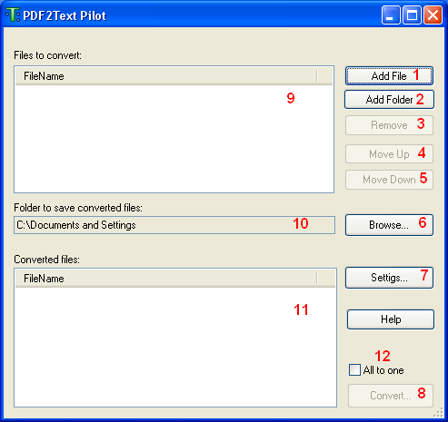
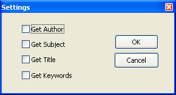

Getting Started
How to convert file(s):
- When you run PDF2Text.exe, the following window will appear:

- Press the "Add file" (1) button to add a file(s) into the list of files to be converted, or press
"Add folder" (2) to add all supported files from a specified folder.
- To remove a file from the list press the "Remove" (3) button or the Del key.
- The order of files in the list is important if the "All to one" (12) option is enabled.
The order of text in a created document will be the same as the order of the files in the list. Use the "Move Up"
(4) and "Move Down" (5) buttons to change the position of a
selected file(s) in the list. Also you can drag the selected files up and down with the help of mouse.
- Press the "Browse..." (6) button to select a folder where the converted text-files will be placed.
- Click the "Settings..." (7) button if you want set a text document settings.
The following window will appear:

You can tick the "Get Author" , "Get Subject" , "Get Title" or "Get Keywords" options.
The text files will have the same settings with the PDF file.
- Set "All to one" (12) checked if you want to create single text document from the selected files.
- Press "Convert..." (8) when ready to convert file(s) from the list to PDF document(s).
While converting, a processing progress window will show up.
- After file is converted it appears in the "Converted files" (11) list.
To open the converted file just double-click it.
If you have any questions, feel free to contact us using our online form: http://www.colorpilot.com/support.html